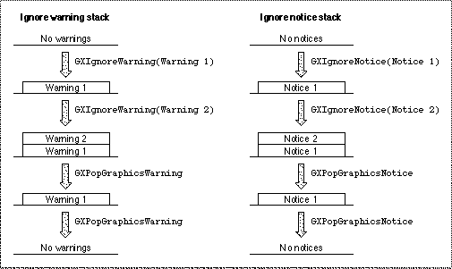

Ignoring Warnings and Notices
You can use theGXIgnoreGraphicsWarningandGXIgnoreGraphicsNoticefunctions to selectively ignore, and thereby suppress, the posting of specific QuickDraw GX warnings and notices in parts of your application. There is no analogous function to ignore errors.The
- Note
- Notices are posted only in the debugging version of QuickDraw GX.
GXIgnoreGraphicsWarningfunction places the warning to be ignored on the ignore warning stack. The posting of all QuickDraw GX warnings that are on the ignore warning stack is suppressed, just as if the problem that resulted in the warning message never occurred.When a QuickDraw GX warning is about to be posted, QuickDraw GX determines if the specific warning is on the ignore warning stack. If the warning to be posted is on the stack, QuickDraw GX does not post this warning. If the warning to be posted is not on the ignore warning stack, QuickDraw GX does post the warning. QuickDraw GX does not change the stack when it checks for the presence or absence of a warning.
The
GXPopGraphicsWarningfunction removes warnings from the ignore warning stack in the reverse order that they are placed on the stack by theGXIgnoreGraphicsWarningfunction. You don't need to specify which warning to remove. You remove one ignored warning code from the top of the ignore warning stack each time that you call theGXPopGraphicsWarningfunction.Since there is an implementation limit on the number of warnings and notices that you can ignore, you should use the
- Note
- There is an implementation limit on the number of times that you can use the
GXIgnoreGraphicsWarningandGXPopGraphicsWarningfunctions. When the implementation limit is exceeded, QuickDraw GX posts awarning_stack_overflowwarning message. If there are no warnings on the ignore warning stack and theGXPopGraphicsWarningfunction is called, QuickDraw GX posts awarning_stack_underflowwarning message.GXIgnoreGraphicsWarningandGXPopGraphicsWarningfunctions only when you need to debug specific parts of your application code.The
GXIgnoreGraphicsNoticefunction provides the same feature for notices that theGXIgnoreGraphicsWarningfunction provides for warnings.The
GXIgnoreGraphicsNoticefunction places the notice to be ignored on the ignore notice stack. The posting of all QuickDraw GX notices on the ignore notice stack is suppressed, just as if the problem that resulted in the notice message never occurred.When a QuickDraw GX notice is about to be posted, QuickDraw GX determines if the specific notice is on the ignore notice stack. If the notice to be posted is on the stack, QuickDraw GX does not post this notice. If the notice to be posted is not on the ignore notice stack, QuickDraw GX does post it. QuickDraw GX does not change the stack when it checks for the presence or absence of a notice.
The
GXPopGraphicsNoticefunction removes notices from the ignore notice stack in the reverse order that they are placed on the stack by theGXIgnoreGraphicsNoticefunction. You don't need to specify which notice to remove. You remove one ignored notice code from the top of the ignore notice stack each time you call theGXPopGraphicsNoticefunction.For example, if you wanted to suppress the
- Note
- There is an implementation limit on the number of times that you can use the
GXIgnoreGraphicsNoticeandGXPopGraphicsNoticefunctions. When the implementation limit is exceeded, QuickDraw GX will post anotice_stack_overflowwarning message. If there are no notices on the notice warning stack and theGXPopGraphicsNoticefunction is called, QuickDraw GX posts anotice_stack_underflowwarning message.attributes_already_setnotice posted by QuickDraw GX, you could use theGXIgnoreGraphicsNoticefunction to push its notice number, -25998, onto the ignore notice stack. When QuickDraw GX is about to post a notice, it looks on the ignore notice stack to determine if its notice number is on the ignore notice stack. If the notice to be posted isattributes_already_set, then the notice is not posted. QuickDraw GX posts any notice that is not on the ignore notice stack.If you also wanted to ignore the
color_already_setnotice, then you could use theGXIgnoreGraphicsNoticefunction to push its notice number, -25995, onto the ignore notice stack. QuickDraw GX would then ignore, and therefore not post, theattributes_already_setandcolor_already_setnotices. Since you added the notices to the ignore notice stack in the orderattributes_already_setand thencolor_already_set, thecolor_already_setnotice would be on top of the ignore notice stack. When you use theGXPopGraphicsNoticefunction to remove a notice from the stack, the first notice to be removed iscolor_already_set, the one on top of the ignore notice stack. To remove theattributes_already_setnotice, you need to call theGXPopGraphicsNoticefunction a second time. After the second call to theGXPopGraphicsNoticefunction, no notices are on the ignore notice stack. As a result, QuickDraw GX resumes posting all notices.Figure 3-4 illustrates how warnings and notices are added to and removed from the ignore warning stack and the ignore notice stack.
Figure 3-4 Adding and removing warnings and notices from the ignore warning and ignore notice stacks

You should ignore warnings and notices only if you are confident that you understand why they are being issued and the consequences of ignoring these warnings and notices.
For example, if your program asks for 100 points in a polygon and there are fewer points available, QuickDraw GX posts a warning and returns all of the points that are available. You can add the
GXIgnoreGraphicsNoticefunction to your code to suppress this warning, but your application needs to be smart enough to accommodate the fact that less than the requested number of points may be returned.The
GXIgnoreGraphicsWarningfunction is discussed on page 3-62. TheGXPopGraphicsWarningfunction is discussed on page 3-63. The QuickDraw warning names and numbers that may be ignored are listed in the section "Warnings" beginning on page 3-10.The
GXIgnoreGraphicsNoticefunction is discussed on page 3-68. TheGXPopGraphicsNoticefunction is discussed on page 3-69. The QuickDraw GX warning names and numbers that can be ignored are listed in the section "Notices" beginning on page 3-27.